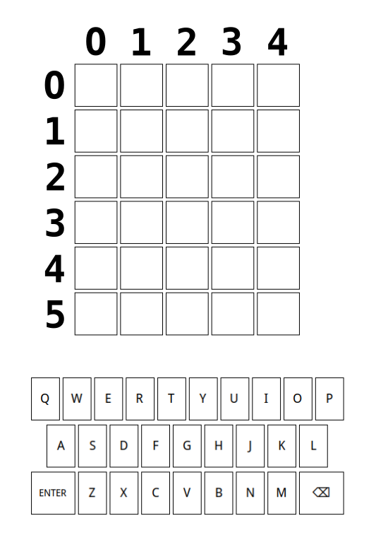

Jed Rembold and Eric Roberts
Week of September 25
generate_password(length, chars) which takes
two arguments:
If you want an easy way to generate strings of different types,
Python’s string library can be
useful
It exports several useful constant strings that you can use:
ascii_letters: All the lowercase and
capital english lettersdigits: All the numeric digitspunctuation: All the punctuation
symbolsYou can thus produce a simple password:
generate_password(5, string.ascii_letters)Or a more difficult password:
generate_password(15, string.ascii_letters + string.digits)import random
def generate_password(length, characters):
"""
Generates a password of desired length from
provided characters.
"""
password = ""
for i in range(length):
password += random.choice(characters)
return password
if __name__ == '__main__':
import string
chars = string.ascii_letters
print(f"Simple password: {generate_password(5, chars)}")
chars += string.digits
print(f"Medium password: {generate_password(10, chars)}")
chars += string.punctuation
print(f"Complex password: {generate_password(15, chars)}")
def color_squares():
|||Define a variable to represent the as-yet-unmatched letters|||
for |||each letter position in the word|||
if |||the letter in that position matches the hidden word:|||
|||Color that square green|||
|||Take that letter out of the unmatched collection|||
for |||each letter position in the word:|||
if |||the letter is in the unmatched collection:|||
|||Color that square yellow|||
|||Take that letter out of the unmatched collection|||To implement the collection of unmatched letters:
unmatched that
contains all the letters in the hidden word that have yet to be matched.
At the start of the process, this variable should equal the hidden
wordunmatched string
You can not subtract letters from a string, so the easiest way is
to use replace to swap out the letter for
some other non-alphabetic character
replace will usually replace
all the letters, which isn’t wanted here. So you can
specify that you want it to only replace the first occurrence by
including the max count of 1 as a third argument.
unmatched = unmatched.replace(letter, "_", 1)
WordleGWindow
object is mandatory in the Wordle project as a means to control or get
information from the graphical windowgw.set_square_letter(0,1,"A")
gw.get_square_letter(4,3)"black" (or choose any other fun
color!)enter_action()
function so that, then the Enter or
Return key is pressed, the sad face turns
into a smiley face